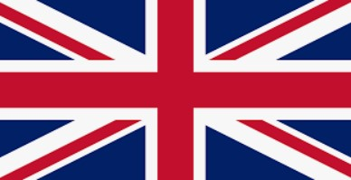
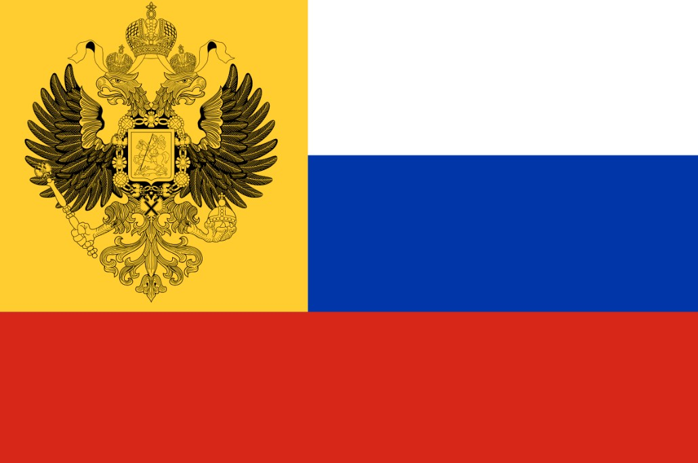

Nations
Introduction
There are many nations that participated in the First World War. Here, a data overview of the amount of soldiers, casualties, population, and affiliation will be shown as well as important/interesting facts about major participants of the war. Click here to see Entente/Allied Powers or Click here to see the Central Powers
Overview
| Country | Soldiers | Military Deaths | Military Wounded | Civilian Deaths | Population | Affiliation |
|---|---|---|---|---|---|---|
| United Kingdom/Great Britain | 8,904,467 | 908,371 | 2,090,212 | 30,633 | 447,249,000 | Entente/Allies |
| France | 8,410,000 | 1,365,735 | 4,266,000 | 40,000 | 41,415,000 | |
| Russian Empire | 12,000,000 | 1,700,000 | 4,950,000 | 2,000,000 | 164,000,0000 | |
| German Empire | 11,000,000 | 1,808,546 | 4,247,143 | 760,000 | 68,000,000 | Central Powers |
| Austro-Hungarian Empire | 7,800,000 | 922,500 | 3,620,000 | 300,000 | 52,000,000 | |
| Ottoman Empire | 2,850,000 | 325,000 | 400,000 | 2,150,000 | 18,520,015 |
Entente Powers
Great Britain/United Kingdom/British Empire

The British Empire was the largest Empire in the world during The First World War.
At its peak in 1921 (after WW1), Great Britain held around 25% of the world's whole area.
With its vast colonies across the globe, the British Empire held a huge amount of resources
and manpower (as seen in the table above).
Image from https://commons.wikimedia.org/wiki/File:British_Empire_in_1914.png
Great Britain possessed a legendary navy that had a reputation of being unsinkable. It was
larger in size than the next two largest navies combined. However, during WW1, it was challenged,
although briefly, by the German navy and was brought to a stalemate in the Battle of Jutland.
Despite being very large, Britain had trouble completely mobilizing all of its troops for the war
and its massive size caused Britain's troops to be spread thin over vast amounts of territory. Britain also suffered
some serious defeats such as at the Battle of Gallipoli.
France
France used to be the strongest land-power in Europe. However, in 1871, Germany was formed by the North German Federation.
This significantly changed the balance of power as France now had an extremley powerful rapidly expanding neighbor at its
eastern border. Even worse, the North German Federation seized a piece of French territory, Alsasce-Lorraine. The French
were declining in both their military and their birth rates compared to Germany. Russia, also fearing Germany, decided to
form an alliance with France to contain Germany from the east and west.
At the start of the War, the French were not prepared at all for the German juggernaut's assault in the Schlieffen Plan.
The French army had ineffective leadership, outdated tactics, was less disciplined, less armed, and less motivated to fight.
The French were quickly pushed back and almost got knocked out of the war, as the Germans almost reached Paris.
Unlike other Nations in WW1 which already started to wear uniforms that blended in with the environment, the French still wore bright blue
uniforms and conducted human wave charges against machine gun fire in the early war.
Image from https://en.wikipedia.org/wiki/Pantalon_rouge#/media/File:798px-French_soldier_early_uniform_WWI(1).JPG
However, France managed to survive and stalemate Germany after the Miracle on the Marne/Battle of the Marne. France eventually adopted a full dark blue uniform and were able to improove their tactics, causing them to perform much better mid and late war.
Russian Empire

Russia was and still is a country with massive amounts of land. Russia also has an extremeley high population and an equally massive army.
The Russian army was the biggest army in Europe (by numbers). Russia also has massive amounts of resources like coal and lumber. However,
Russia also has many problems. Its government is corrupt and decaying. Their military is poorly supplied and armed. Russia's officer leadership
is quite poor and their people can barley afford to eat. Russia has also been just recently humiliated by Japan in the
Russo-Japanese War and had its navy annihilated. Russia's industry is
lackluster and the majority of its economy comes from agriculture.
During WW1, their main ability is sheer size, in both manpower and area. They were able to retreat deep inside their own territory,
so deep that if it were any other country, they'd be conquered. Germany initially focused on France, but after failing to strike
the killing blow, decided to fight Russia. Russia was able to fight back but had significantly more casualties. Russia was also able to
stalemate against the Ottomans to the south and inflicted more casualties. In 1917, the
Russian Revolution began and Russia had to
surrender to the Central Powers and was humiliated once again. Russia soon turned into a place of anarchy until the Soviet Union was
established.